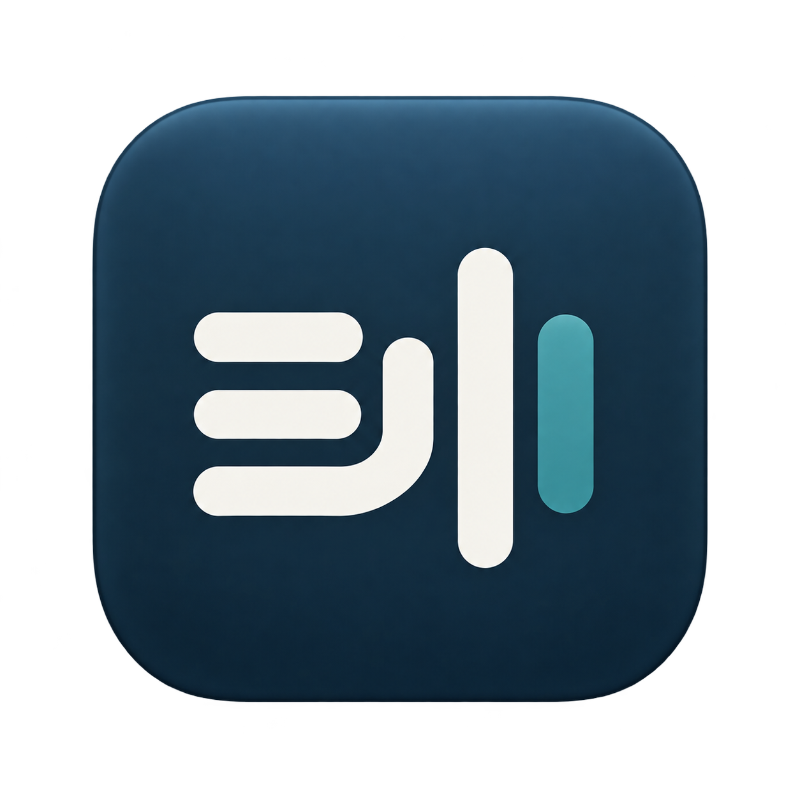

Text hören.
Mit der Stimme
schreiben.
Vorlesen & Diktieren für macOS.
Lass dir Bildschirmtext vorlesen. Bring Gedanken mit deiner Stimme aufs Papier. Zwei klare Aktionen, ein ruhiger Begleiter.
Privater Entwicklungsbuild: Lokales Vorlesen und Diktieren sind integriert. Öffentliche Freigabe und breitere Textfeld-Kompatibilität werden noch geprüft.

Text wird Stimme · Bestätigtes App-Icon
Text ↔ Stimme
Worte so nutzen,
wie es gerade passt.
Vorlesen
Bildschirmbereich wählen. Zuhören. Lokale Texterkennung und Sprachausgabe auf deinem Mac.
DiktierenIn Erprobung
Sprechen. Text einfügen. Lokales Diktieren ausdrücklich starten und in unterstützte Textfelder einfügen.
Interaktionsstudie
Bildschirmbereich wählen.
Ein Tastenkürzel startet die Auswahl. Nach der Texterkennung beginnt das Vorlesen.
Reine Gestaltungsvorschau. Diese Tasten wechseln die Erklärung; sie nehmen nichts auf und spielen nichts ab.
Wiedererkennbar. Auch bei 22 pt.
Eine Silhouette für die Marke. Eine eigene monochrome Vorlage für die Menüleiste. Klare Beschriftungen erklären die Aktionen.
#172B3A
#F4F2EC
#266D79
#E4B78F
Apricot setzt warme Akzente. Für Text auf hellem Grund verwenden wir Tintenblau oder Petrol.